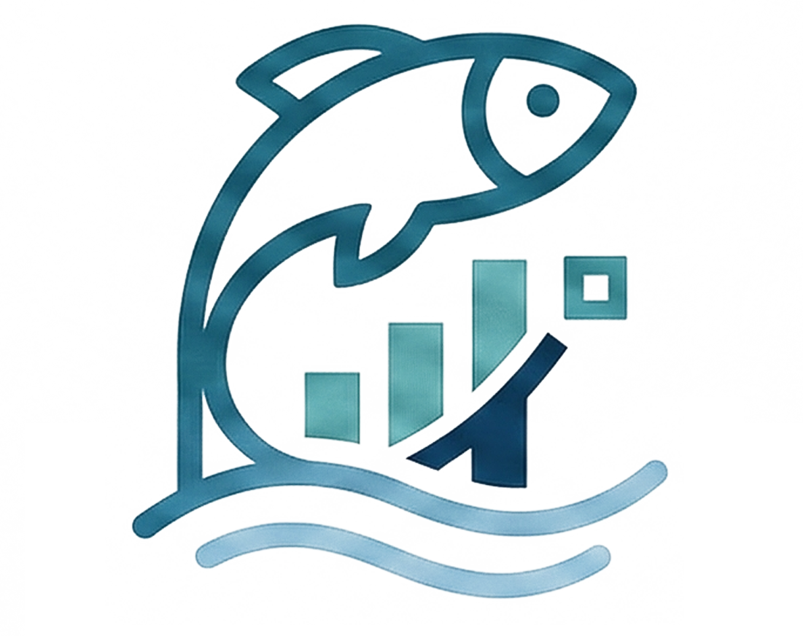
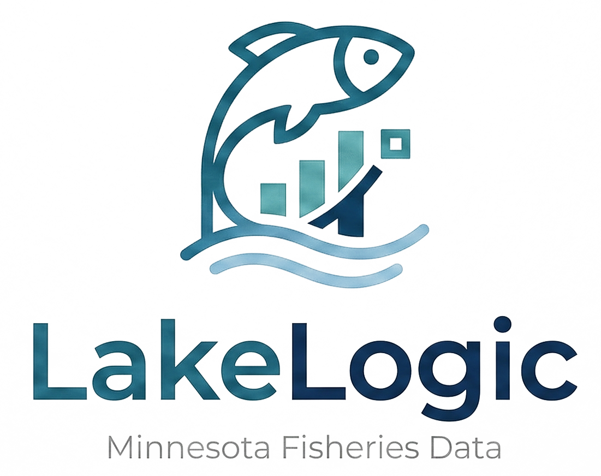

Search Results

Select a lake to view detailed stocking history, survey data, and lake information

LakeLogic Minnesota Fisheries Data
Select a lake to view detailed stocking history, survey data, and lake information